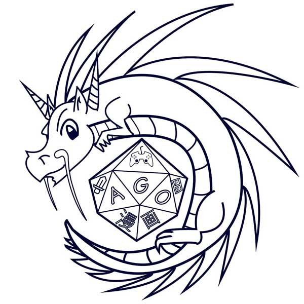

Our Community:
Just like a party of adventurers, we can’t do this alone! Learn more about our mentors and fellow creators in Philadelphia and beyond.
Drexel’s Anime & Gaming Organization
Drexel’s Anime & Gaming Organization (AGO) were some of our original playtesters whose enthusiasm and positive feedback encouraged us to work more on the game. AGO works to bring game enthusiasts together to make new friends and share new experiences through diverse gaming events, and to promote anime within the Drexel community through screenings and discussions. AGO conducts weekly screenings, twice weekly board and tabletop gaming sessions, and all-day long video games streamed live on Twitch! Looking to play video games, tabletop games, or watch anime with like-minded people?
Check out their Facebook group https://www.facebook.com/groups/DrexelAGO/ or DragonLink page https://drexel.campuslabs.com/engage/organization/anime-and-gaming-organization.